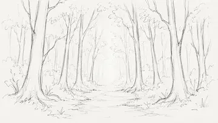

Nature Seed Tegn en sti. Bring dem sammen.
Et gratis tegn-og-løs-fysikpuslespil, du kan spille i din browser. Tegn en linje med begrænset blæk, så bliver den til en rampe, bro eller opsamlingspunkt, der fører Water Drop hen til Seed. Hvert løst niveau genskaber en akvarelskov.
Udgivet den 18. september 2026 med 100 niveauer, stjerner for linjeeffektivitet og gemt fremskridt. Det er gratis på itch.io, Game Jolt og indiexpo; iOS- og Android-versionen er målet og er endnu ikke i app-butikkerne.
Tegntegn med begrænset blæk
Forbindbring Water Drop til Seed
Blomstrebring skoven tilbage
Inde i den nuværende build
Det, du tegner, bliver en del af niveauet.
Hver streg, du fastlægger, bliver til en fast genstand med ægte kollisioner, og Water Drop og Seed reagerer på den. Både blæk og antal linjer er begrænset, så linjens form har betydning.
Udgivelsesstatus Udgivet 18. september 2026

Spiloversigt
Et afslappende tegn-og-løs-puslespil om at få to små figurer sammen.
Idéen
Tegn en sti, før Water Drop og Seed sammen og se den stille skitse vågne til live igen.
Lanceringsbuild
100 spilbare niveauer med touch-tegning, stjerner for linjeeffektivitet og fremskridt, der gemmes mellem sessioner.
Publikum
Spillere, der kan lide rolige puslespil, let fysik, naturtemaer og stressfri mobilspil.
Status
Udgivet den 18. september 2026 og gratis at spille i din browser. En mobilversion er målet; den er endnu ikke i app-butikkerne.
Funktioner
Hvad du gør i Nature Seed.
Tegn for at løse fysiske stier
Hvert puslespil starter med terræn, Seed og Water Drop. Spillerens streg bliver til den rampe, bro eller det opsamlingspunkt, der forbinder dem.
Tydelig fysikfeedback
Water Drop og Seed bevæger sig på måder, du kan følge, så et mislykket forsøg viser dig, hvad der skal ændres.
Skovrestaureringsbelønninger
Fuldfør et niveau, og den skitserede scene fyldes med farve og voksende træer.
Korte niveauer, tegning med touch
Niveauerne er korte, og man tegner med touch, hvilket passer til hurtige sessioner på en telefon.
Gameplay-loop
Sådan spiller du Nature Seed
- Trin 01Læs skitsen
Hold øje med skråninger, huller og forhindringer, og find den sikreste måde at forbinde begge figurer på.
- Trin 02Tegn linjen
Tegn din linje. Stregen bliver til en rampe, en guide eller et opsamlingspunkt for figurerne.
- Trin 03Bekræft og observér
Fasthold linjen og se figurerne reagere. Du kan se, hvad der virkede, og hvad der ikke gjorde.
- Trin 04Blomstre eller forfine
Når Water Drop når Seed, kommer skoven tilbage. Hvis de misser hinanden, så tegn igen med det, du lige har lært.
Historie / verden
En skitseret skov venter på vand.
Nature Seed begyndte som et tegn-og-løs-fysikpuslespil om at genoprette noget skrøbeligt i stedet for at skubbe genstande sammen.
Rollelisten er Seed, Water Drop og en skov, der vender tilbage fra skitse til farve, mens du spiller. Hvert puslespil er et lille job: studér landskabet, tegn en sti og hjælp vandet med at nå noget, der kan vokse.
- Designretning
- Rolig fysik og synlig genopretning
- Figurer
- Water Drop og Seed
- Interaktion
- Touch-tegning
- Mestringsbelønning
- En løsning på én linje giver tre stjerner
Overblik
Gratis i browseren i dag, med mobil som mål.
Du får begrænset blæk og et begrænset antal linjer. Brug dem til at føre Water Drop hen til Seed, og spil derefter niveauet igen og skær din løsning ned til én linje for tre stjerner.
- Genre
- Tegn-og-løs-fysikpuslespil
- Platformmål
- iOS / Android
- Sessionsform
- Korte rolige niveauer
Download materialer
Nature Seed presse- og skabermaterialer
WebP-previews til pressedækning, udgivervurdering og referencer til butikssider. Kildefiler i fuld opløsning fås efter anmodning.
Brand og karakterer
 Water DropDen blå figur, der skal nå Seed.
Water DropDen blå figur, der skal nå Seed.
 Seed-karakterDen grønne figur, som Water Drop forsøger at nå.
Seed-karakterDen grønne figur, som Water Drop forsøger at nå.
 TrævækstTræet, der vokser efter en løsning.
TrævækstTræet, der vokser efter en løsning.
 SkovmenuBaggrund til hovedmenuen.
SkovmenuBaggrund til hovedmenuen.
 Gameplay-baggrundNiveaubaggrund med et tomt spilområde.
Gameplay-baggrundNiveaubaggrund med et tomt spilområde.
Tegn for at løse skitseniveauer
 Skitse niveau 01Skitse før løsningen.
Skitse niveau 01Skitse før løsningen.
 Skitse niveau 02Skitse før løsningen.
Skitse niveau 02Skitse før løsningen.
 Skitse niveau 03Skitse før løsningen.
Skitse niveau 03Skitse før løsningen.


Skitse niveau 04Skitse før løsningen. Skitse niveau 05Skitse før løsningen.
Skitse niveau 05Skitse før løsningen.
 Skitse niveau 06Skitse før løsningen.
Skitse niveau 06Skitse før løsningen.
 Skitse niveau 07Skitse før løsningen.
Skitse niveau 07Skitse før løsningen.
 Skitse niveau 08Skitse før løsningen.
Skitse niveau 08Skitse før løsningen.
 Skitse niveau 09Skitse før løsningen.
Skitse niveau 09Skitse før løsningen.
 Skitse niveau 10Skitse før løsningen.
Skitse niveau 10Skitse før løsningen.
Gendannede puslespilsscener
 Gendannet niveau 01Genskabt efter løsningen.
Gendannet niveau 01Genskabt efter løsningen.
 Gendannet niveau 02Genskabt efter løsningen.
Gendannet niveau 02Genskabt efter løsningen.
 Gendannet niveau 03Genskabt efter løsningen.
Gendannet niveau 03Genskabt efter løsningen.
 Gendannet niveau 04Genskabt efter løsningen.
Gendannet niveau 04Genskabt efter løsningen.
 Gendannet niveau 05Genskabt efter løsningen.
Gendannet niveau 05Genskabt efter løsningen.
 Gendannet niveau 06Genskabt efter løsningen.
Gendannet niveau 06Genskabt efter løsningen.
 Gendannet niveau 07Genskabt efter løsningen.
Gendannet niveau 07Genskabt efter løsningen.
 Gendannet niveau 08Genskabt efter løsningen.
Gendannet niveau 08Genskabt efter løsningen.
 Gendannet niveau 09Genskabt efter løsningen.
Gendannet niveau 09Genskabt efter løsningen.
 Gendannet niveau 10Genskabt efter løsningen.
Gendannet niveau 10Genskabt efter løsningen.
Udviklingstidslinje
Nature Seeds udviklingstidslinje
- Sommer 2025Originalt koncept
Nature Seed begyndte som en idé til et roligt mobilt puslespil om forbindelse og genoprettelse af naturen.
- oktober 2025Identitet for Seed og Water Drop
Vi færdiggjorde designdokumentet og landede på Seed og Water Drop som hovedfigurer.
- december 2025Udviklingen begynder
Vi planlagde de første niveauer på papir, gik derefter i gang med at bygge, og kernesystemerne blev spilbare.
- februar 2026Stor gennemgang af udkastniveauer
En stor, grov gennemgang af niveauerne gav os et grundlag for senere finpudsning og balancering.
- marts-april 2026Mekanik og niveaugennemgang
Vi gennemgik ekstra mekanikker og kladdeniveauer og forenklede eller omarbejdede dem for at holde spillet roligt.
- juli 2026Lodret prototypegennemgang
Juli-buildet samlede tegning med begrænset blæk, effektivitetsstjerner, gemt fremskridt og stabil linjegenerering i én spilbar løkke.
- 18. september 2026Nature Seed-udgivelse
Spillet udkom som Nature Seed med 100 niveauer, stjerner for linjeeffektivitet, gemt fremskridt og akvarelgenopretningsscener.
Nature Seed FAQ
Almindelige spørgsmål om Nature Seed
Er Nature Seed gratis?
Ja. Du kan spille det gratis i din browser på itch.io, Game Jolt og indiexpo.
Er Nature Seed udkommet endnu?
Ja. Det udkom den 18. september 2026 med 100 niveauer. iOS- og Android-versionen er målplatformen og er endnu ikke i app-butikkerne.
Hvad er Nature Seed for et spil?
Et afslappende tegn-og-løs-fysikpuslespil. De linjer, du tegner, bliver til faste genstande, der hjælper Water Drop og Seed med at mødes.
Hvordan spiller man Nature Seed?
Læs terrænet, tegn en rute med dit begrænsede blæk, og se begge figurer reagere. Hvis de misser hinanden, så tegn igen. Færre linjer giver flere stjerner, og én linje giver tre.
Hvem laver Nature Seed?
WillowinWorlds, et uafhængigt studie, der laver mobile puslespil og arkadespil.
Må jeg bruge pressematerialet til Nature Seed?
Ja, til presse, udgivervurdering og butiksreferencer. Kildefiler forbliver private, medmindre du beder os om dem.
Nature Seed Devlog
Hvad ændrede sig og hvornår
- Nature Seed-udgivelse
Nature Seed udkom under sin endelige titel som et gratis browserspil på itch.io, Game Jolt og indiexpo med 100 niveauer, stjerner for linjeeffektivitet og gemt fremskridt.
- Niveau 2: gennemgang af genopretning og stabilitet
Niveau 2 bruger nu sit produktionsbaggrundspar med mere pålidelig niveauopsætning, kollisionstjek og færdiggørelsesfeedback.
- juli 2026Spilbar build
Juli-buildet kombinerede linjetegning med begrænset blæk, effektivitetsstjerner, gemt fremskridt og genopretningsfeedback.
- april 2026Omarbejdning af niveauer
Efter en intern gennemgang har vi omarbejdet flere kladdeniveauer for at skære ned på kompleksiteten og gøre dem lettere at læse på en telefon.
- marts 2026Mekanikgennemgang
Vi testede ekstra mekanikker og fjernede dem, der fik niveauerne til at føles overfyldte.
- februar 2026Stor gennemgang af udkastniveauer
En stor, grov gennemgang af niveauerne blev grundlaget for senere finpudsning og balancering.
- december 2025Udviklingen begynder
Kernesystemerne gik fra designdokumentet til spilbar form.
- Sommer 2025Originalt koncept
Den første version af Nature Seed var en rolig puslespilidé om forbindelse og genoprettelse af naturen.